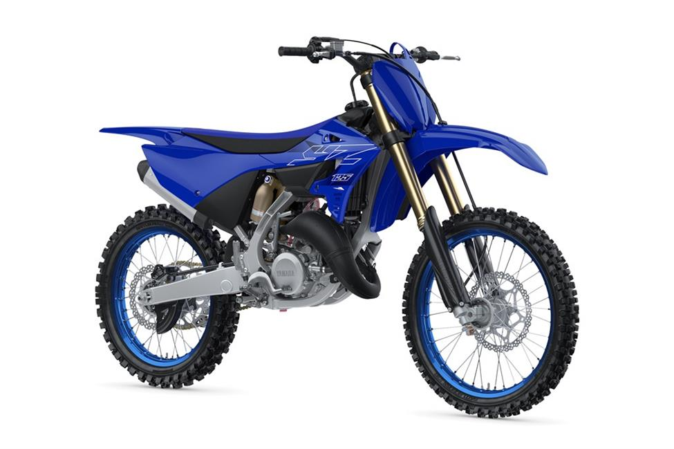

The new 2022 YZ125 represents an important evolution in Yamaha’s two-stroke lineage. As the first full model change to the iconic model in more than 15 years, Yamaha engineers put considerable thought into developing a motorcycle that would be both dominant on the racetrack and user-friendly for developing riders looking to bridge the gap between recreation riding and competitive motocross. The liquid-cooled 125cc two-stroke engine has been thoroughly reworked to produce more power. Every functional part of the 2022 YZ125 engine is new, including the cylinder body, cylinder head, piston, piston pin, connecting rod, crankcase and expansion chamber. To match increased engine performance, an updated lightweight braking system features larger front pistons, a more rigid caliper, a redesigned 270mm front rotor with a 30% increase in pad contact area and higher friction pad material, all combining to provide exceptional braking power and feel.
